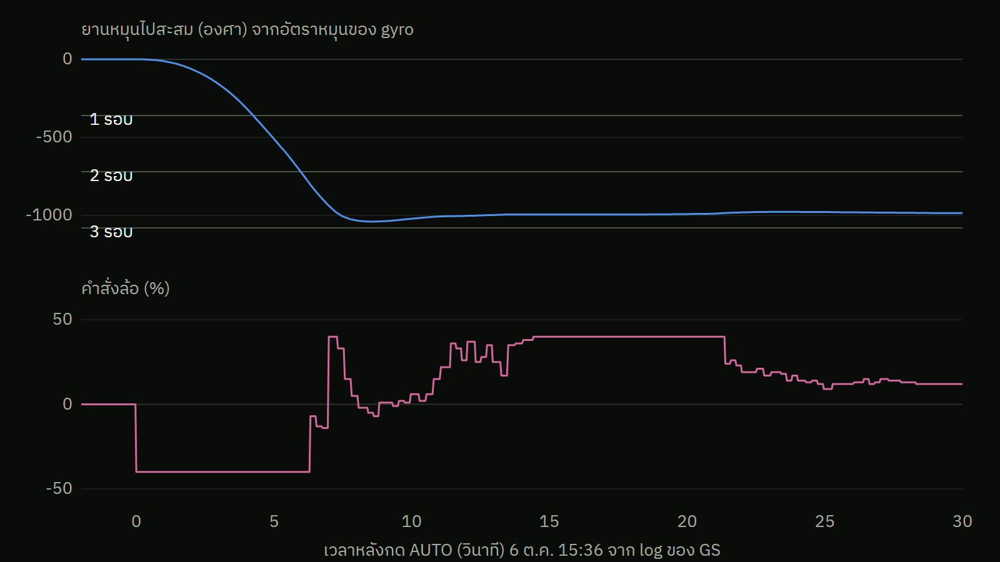

ที่เจอไม่ตรงที่คาด · 6 ต.ค. 15:36
เป้าห่างแค่ 18° แต่ยานหมุนไปเกือบ 3 รอบก่อนเข้าเป้า
คาดไว้เริ่มที่ −18° ล้อหมุนนิดเดียว หันเข้าเป้าในไม่กี่วินาที
เจอจริงล้อถูกสั่ง −40% ค้าง 6 วิ ยานหมุนไปราว 1,000° แล้วค่อยกลับมาเข้าเป้า

เบาะแส: ยานหมุน 200 °/วิ แต่เบรก (kd) ไม่ทำงาน แปลว่า error ที่ตัวคุมเห็นต้องใหญ่กว่า 18° มาก
สาเหตุ: โค้ดผู้จัดเก็บมุมประมาณสะสมไว้ ตอนเราทดสอบหมุนยานหลายรอบ ค่านี้จึงเกินมา 3 × 360°
แก้ (team-3): คิด error ทางสั้น ±180° และตั้งมุมใหม่ตอนเข้า AUTO · ลองบนแท่นแล้ว ยานหมุนถูกทาง
ข้อมูล: log ของ GS 15:36 · GS ประทับเวลาเป็นวินาที ตัวเลขสะสมคลาดได้ ~6%
06